Termodinâmica: Aula 01
Dilatação e Contração Térmica
1. Introdução
No capítulo anterior vimos que, para a maioria das substâncias, um aumento de temperatura acarreta na dilatação térmica do corpo. Consequentemente, uma diminuição na temperatura acarreta a contração térmica do corpo.
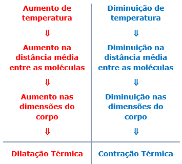Nesse capítulo, vamos estudar a expressão matemática que descreve esse comportamento térmico, partindo da observação experimental de que a dilatação ou contração térmica de um corpo depende dos seguintes fatores:
a) tipo de material do qual o corpo é feito;
b) volume inicial do corpo,
e) variação de temperatura do corpo.
2. Coeficiente de Dilatação Volumétrico
Quando corpo dilata ou contrai, todas as suas dimensões mudam de tamanho. A animação abaixo ilustra esse fato para dilatação térmica de um paralelepípedo.
Analisando dados de experimentos onde corpos de diferentes materiais e com diferentes volumes iniciais são submetidos a diferentes variações de temperatura, percebe-se que, em uma determinada faixa de temperatura, a seguinte relação se apresenta constante:
Onde:
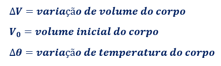Essa fórmula nos diz que a variação de volume de um determinado material, dividido pelo produto entre o volume inicial e a variação de temperatura, é constante dentre uma determinada faixa de temperatura.
Essa relação matemática é válida para determinada faixa de valores de temperatura, sendo utilizada para definir o coeficiente de dilatação volumétrico do material (γ), dentro de dessa faixa de temperatura.
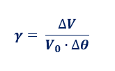Unidade: m3/(m3 ⋅ °C) ou simplesmente °C -1.
Conhecido o valor do coeficiente γ, é possível determinar a variação de volume de um corpo, a partir de seu volume inicial e da variação de temperatura sofrida.
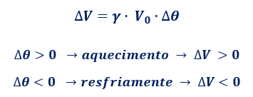A variação de volume é diretamente proporcional ao coeficiente dilatação, ao volume inicial e à variação de temperatura.
3. Coeficiente de Dilatação Superficial
Se um corpo sofre dilatação ou contração térmica, todas as suas dimensões variam. Contudo, a variação é proporcional ao tamanho de cada dimensão.
Logo, se temos uma placa com uma altura muito menor do que seu comprimento e largura, a dilatação volumétrica será desprezível quando comparada a sua dilatação superficial, uma vez que a altura praticamente não varia de tamanho, conforme ilustrado abaixo.
Para essas situações, sendo relevante apenas a dilatação da superfície do corpo, definimos o coeficiente de dilatação superficial (β), tal que:
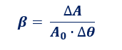Unidade: m2/(m2 ⋅ °C) ou simplesmente °C -1.
Onde:
Conhecido o valor do coeficiente β, é possível determinar a variação de área de superfície de uma placa, a partir de sua área inicial e da variação de temperatura sofrida.
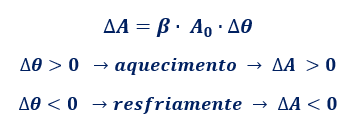A variação da área de superfície é diretamente proporcional ao coeficiente dilatação, à área inicial e à variação de temperatura.
4. Coeficiente de Dilatação Linear
Agora, se temos um corpo no qual seu comprimento é muito maior que sua largura e altura, a única variação de tamanho relevante será no seu comprimento. Nesse caso, temos a dilatação linear do corpo.
Para essas situações, como só é relevante a dilatação do comprimento do corpo, definimos o coeficiente de dilatação linear (α), tal que:
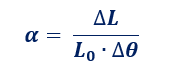Onde:
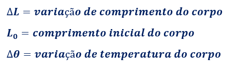Conhecido o valor de α, é possível determinar a variação de comprimento de um corpo, a partir de seu comprimento inicial e da variação de temperatura sofrida.
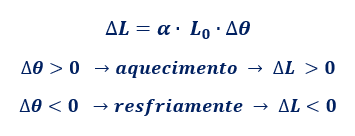A variação de comprimento é diretamente proporcional ao coeficiente dilatação, ao comprimento inicial e à variação de temperatura.
5. Tabela com os coeficientes de dilatação linear de alguns materiais
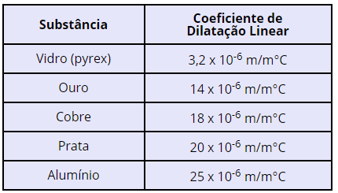6. Relação entre os Coeficientes de Dilatação
É possível demonstrar algebricamente a seguinte relação:
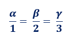Exercícios

Prof. Geraldo Felipe / IFRN-CNAT (2014-2018)